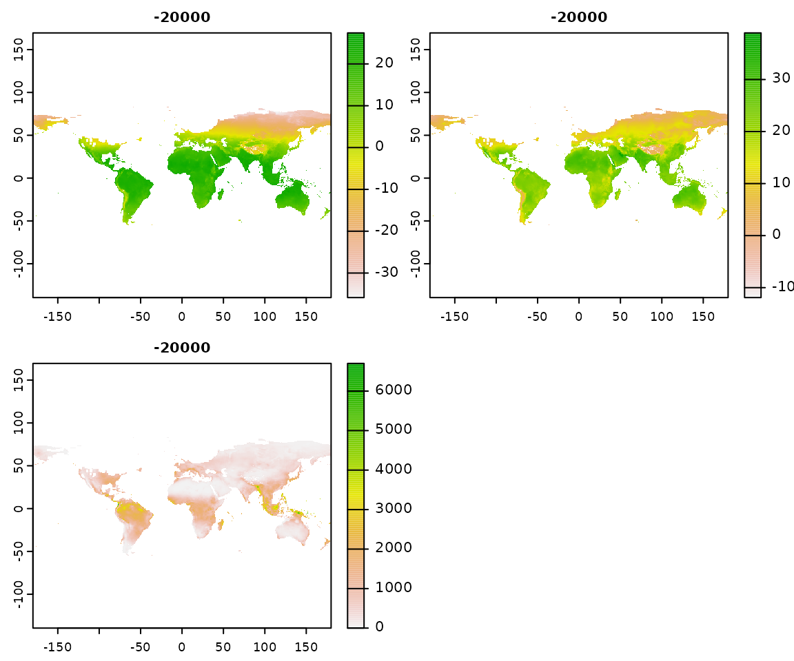
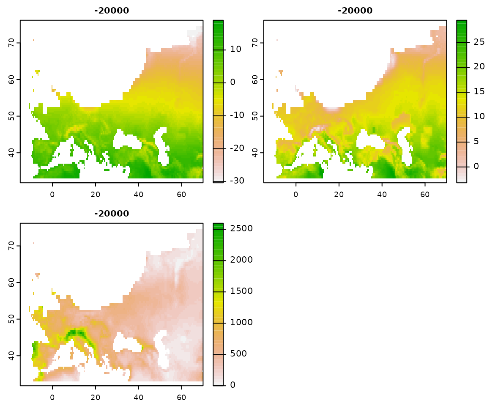
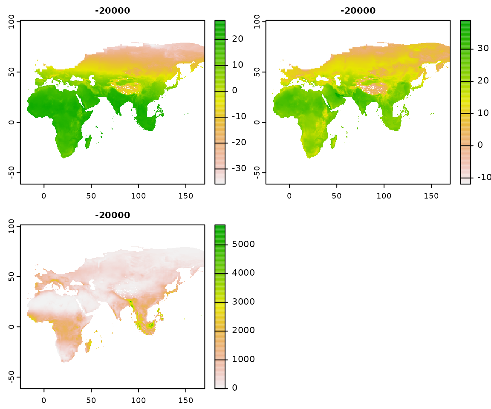
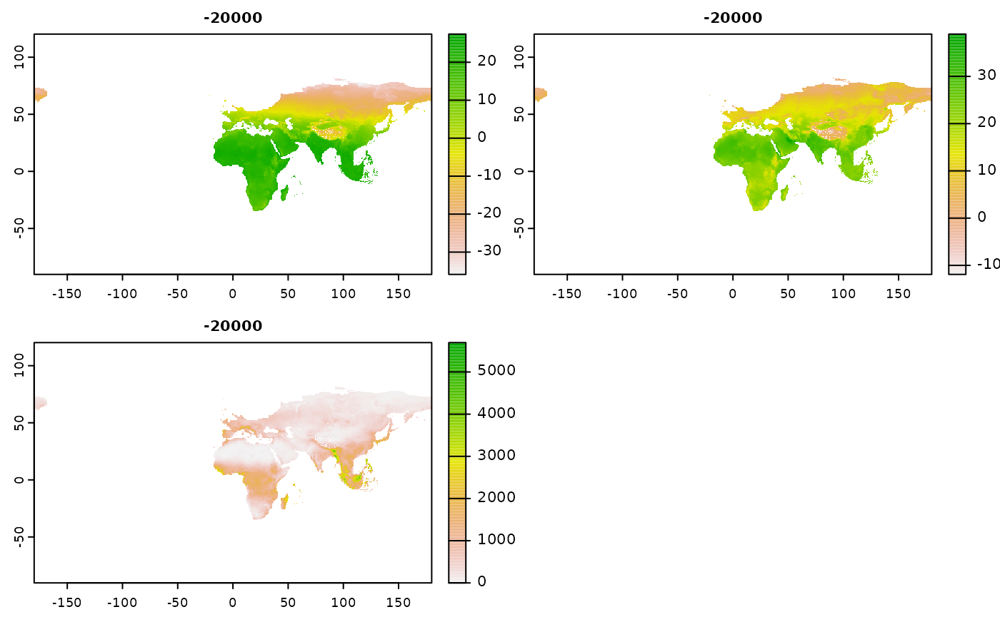
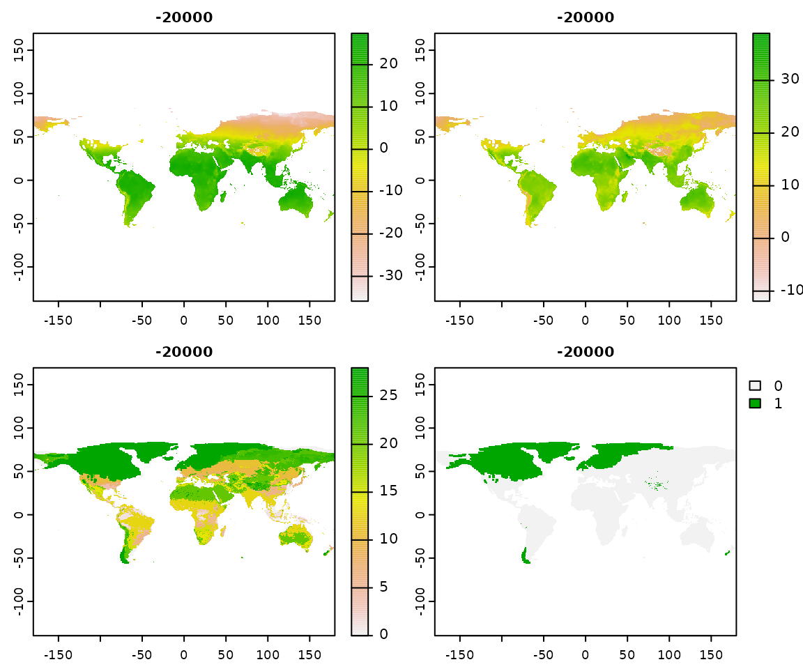
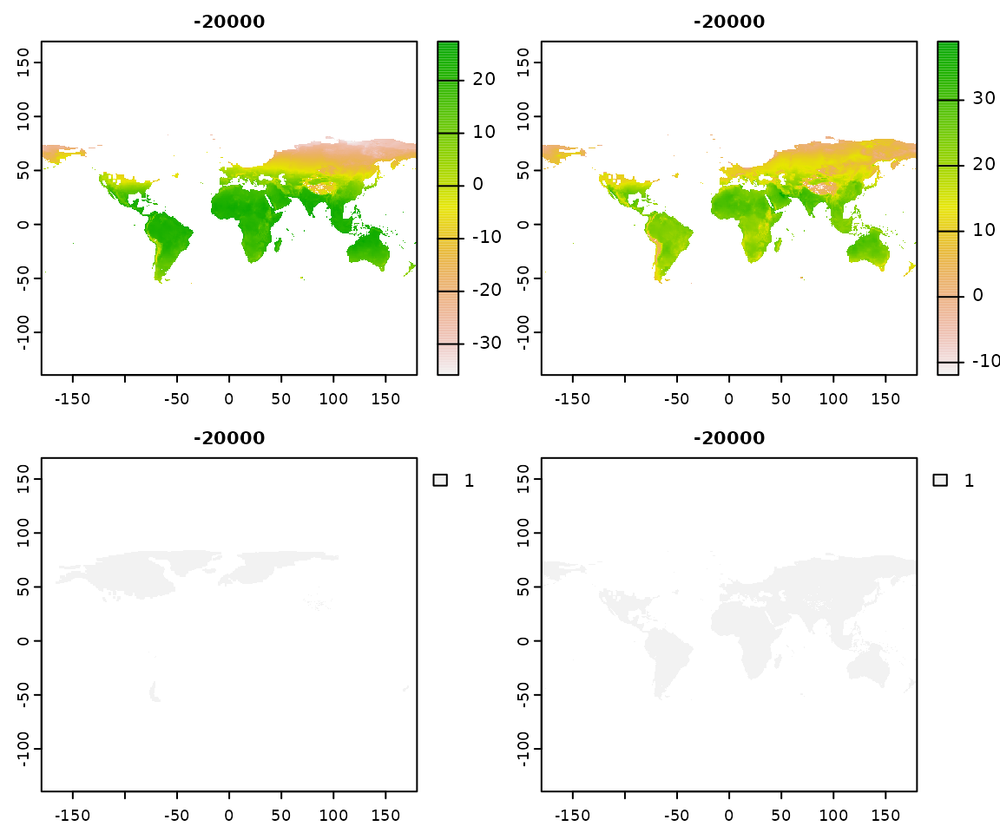
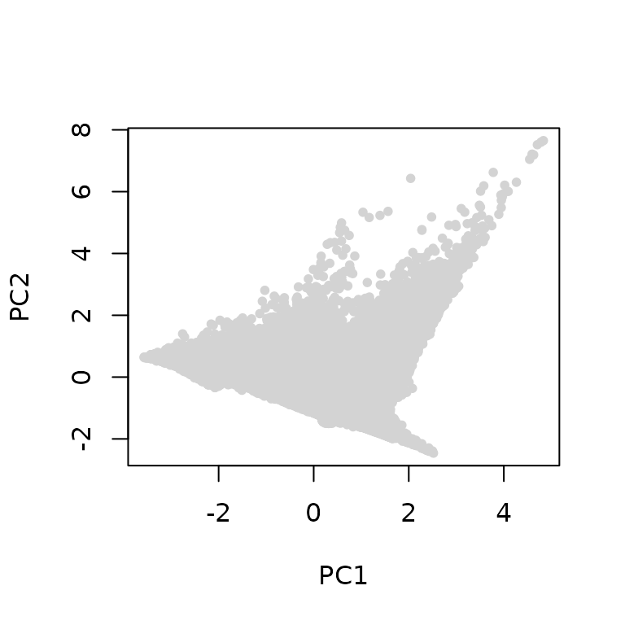
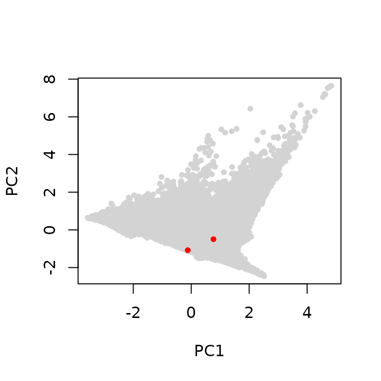

Install the library
You will need to install the library from Github. For this step, you will need to use devtools (if you haven’t done so already, install it from CRAN with install.packages("devtools"). Once you have devtools, simply use:
devtools::install_github("EvolEcolGroup/pastclim")There is a vignette with detailed step by step examples on how to use the library. You can find it on the website for the package. Or, if when can build it when installing pastclim :
devtools::install_github("EvolEcolGroup/pastclim", build_vignettes = TRUE)And read it directly in R with:
vignette("pastclim_overview",package="pastclim")The vignette also provides instructions on how to install the optional companion package pastclimData, which simplifies the task of downloading and storing the climate simulations. Depending on the operating system you use, you might need additional packages to build a vignette. —
NOTE: pastclim relies on terra to process rasters. There is a known bug in terra that leads to the occasional message:
"Error in x$.self$finalize() : attempt to apply non-function"being reported. This is an error related to garbage collection, which does not affect the script being correctly executed, so it can be ignored. More discussion of this issue can be found on stackoverflow
Download the data
You will need to download climatic reconstuctions before being able to do any work with pastclim. The library focuses on two datasets: “Beyer2020” which covers the last 120k years; and, for project that go further back in time, “Krapp2021” which goes back to 800kya. For these to datasets, there are functions that help you download the data and choose the variables. If you are familiar with handling netcdf files, you can also use most functions in pastclim on custom datasets.
For Beyer2020 and Krapp2021, you can get a list of available variables for each dataset with:
library(pastclim)
get_vars_for_dataset(dataset="Beyer2020")
#> [1] "bio01" "bio04" "bio05" "bio06" "bio07" "bio08"
#> [7] "bio09" "bio10" "bio11" "bio12" "bio13" "bio14"
#> [13] "bio15" "bio16" "bio17" "bio18" "bio19" "npp"
#> [19] "lai" "biome" "altitude" "rugosity"and
get_vars_for_dataset(dataset="Krapp2021")
#> [1] "bio01" "bio04" "bio05" "bio06" "bio07" "bio08"
#> [7] "bio09" "bio10" "bio11" "bio12" "bio13" "bio14"
#> [13] "bio15" "bio16" "bio17" "bio18" "bio19" "npp"
#> [19] "biome" "altitude" "rugosity"However, before being able to use these data you need to download the data files into a directory of choice. Note that these data are large (from 100s of Mb to a few Gb). There is also a small “Example” dataset that we will use in this vignette. This is included in the package when you download it, and it is stored in the /extdata directory, which can be found in:
path_to_example_nc <- system.file("/extdata/", package="pastclim")For Beyer2020 and Krapp20221, pastclim manages the files necessary for each variable. So, we can download data for bio01 and bio05 for the Beyer2020 dataset with (this operation might take several minutes, as the datasets are large; R will pause until the download is complete):
download_dataset(dataset="Beyer2020", bio_variables = c("bio01","bio05"),
path_to_nc = "~/paleoclimate_reconstructions")Note that we need to provide pastclim with a local path where to store the reconstructions (in this case ~/paleoclimate_reconstructions, but you probably want a different one on your machine). We will have to use that path again every time we use a command to manipulate the data.
You can get a summary of variables already downloaded (and thus that can be used) with:
get_downloaded_datasets(path_to_nc = path_to_example_nc)
#> $Example
#> [1] "bio01" "bio10" "bio12" "biome"Note that for the example above, we used the directory containing the example dataset; use the path where you stored the data that you donwloaded. Note that multiple variables are packed together into a single file, so the command might list more variables than the ones that we downloaded originally.
Having to set a path every time can be cumbersome; a simpler option to handle climate files is to install a companion package pastclimData:
devtools::install_github("EvolEcolGroup/pastclimData", ref="master")If pastclimData is installed, the paleoclimate reconstructions will be stored within that package when you download them and they will then be found automatically by pastclim without the need to set a path). So, to download the Beyer2020 dataset, we simply need:
download_dataset(dataset="Beyer2020", bio_variables = c("bio01","bio05"))By not setting path_to_nc in the command above, the downloaded file will be stored in that companion librarypastclimData. The downside of storing the data in pastclimData is that, if you reinstall or upgrade R, you will need to redownload the climate reconstructions.
Get climate for location
Get climate for several locations at different times:
locations<-data.frame(longitude=c(0,90,-120,-7),latitude=c(20,45,60,37),
time_bp=c(0,-10000, -20000, -10000))
climate_for_locations (x= locations[,c("longitude", "latitude")],
time_bp = locations$time_bp, bio_variables=c("bio01","bio12"),
dataset="Example", nn_interpol = FALSE, path_to_nc = path_to_example_nc)
#> longitude latitude time_bp bio01 bio12
#> 1 0 20 0 27.469721 79.85666
#> 2 90 45 -10000 5.871795 74.30677
#> 3 -120 60 -20000 NA NA
#> 4 -7 37 -10000 NA NANote that the last two locations, for the appropriate time steps, are not available (either under water or ice), and so pastclim does not return a climate reconstruction. In some instances, this is due to the discretisation of space in the raster. We can interpolate climate among the nearest neighbours, thus using climate reconstructions for neighbouring pixels if the location is just off one or more land pixels:
climate_for_locations (x= locations[,c("longitude", "latitude")],
time_bp = locations$time_bp, bio_variables=c("bio01","bio12"),
dataset="Example", nn_interpol = TRUE, path_to_nc = path_to_example_nc)
#> longitude latitude time_bp bio01 bio12
#> 1 0 20 0 27.469721 79.85666
#> 2 90 45 -10000 5.871795 74.30677
#> 3 -120 60 -20000 NA NA
#> 4 -7 37 -10000 16.986354 634.06764In this case, the last location is indeed just off the coast, and so we can reconstruct some appropriate climate by interpolating. Note that nn_interpol = TRUE is the default for this function.
In both commands above, we used the local copy of the Example dataset. If pastclimData was installed, we could use the same commands without setting path_to_nc.
Get time series for these locations:
locations_ts <- time_series_for_locations(x= locations[,c("longitude", "latitude")],
bio_variables=c("bio01","bio12"),
dataset="Example", path_to_nc = path_to_example_nc)The resulting dataframe can be subsetted to get the time series for each location (the small example dataset only contains 5 time points):
subset(locations_ts,id==1)
#> longitude latitude id time bio01 bio12
#> 1 0 20 1 -20000 22.29012 90.42681
#> 1.1 0 20 1 -15000 23.55733 124.59431
#> 1.2 0 20 1 -10000 25.49891 143.62798
#> 1.3 0 20 1 -5000 26.15615 123.10526
#> 1.4 0 20 1 0 27.46972 79.85666Note that the last two locations do not return information for all time steps. That’s due to the change in sea level and icesheet extent, and this function (as opposed to climate_for_locations) does not allow for interpolation.
subset(locations_ts,id==3)
#> longitude latitude id time bio01 bio12
#> 3 -120 60 3 -20000 NaN NaN
#> 3.1 -120 60 3 -15000 NaN NaN
#> 3.2 -120 60 3 -10000 -4.152016 304.4748
#> 3.3 -120 60 3 -5000 -3.695625 368.5451
#> 3.4 -120 60 3 0 -3.614444 328.0434
subset(locations_ts,id==4)
#> longitude latitude id time bio01 bio12
#> 4 -7 37 4 -20000 11.81411 1211.144
#> 4.1 -7 37 4 -15000 13.98757 1138.329
#> 4.2 -7 37 4 -10000 NaN NaN
#> 4.3 -7 37 4 -5000 NaN NaN
#> 4.4 -7 37 4 0 NaN NaNGet climate for a given time step
We can extract rasters for a given time step:
climate_20k <- climate_for_time_slice(time_bp = -20000,
c("bio01","bio10","bio12"),
dataset="Example", path_to_nc = path_to_example_nc)We can get a summary of this object:
library(terra)
#> terra 1.5.21
climate_20k
#> class : SpatRaster
#> dimensions : 300, 720, 3 (nrow, ncol, nlyr)
#> resolution : 0.5, 0.5 (x, y)
#> extent : -180, 180, -60, 90 (xmin, xmax, ymin, ymax)
#> coord. ref. : lon/lat WGS 84
#> sources : example_climate.nc:BIO1
#> example_climate.nc:BIO10
#> example_climate.nc:BIO12
#> varnames : bio01 (Annual Mean Temperature)
#> bio10 (Mean Temperature of Warmest Quarter)
#> bio12 (Annual Precipitation)
#> names : bio01, bio10, bio12
#> time : -20000and plot these two layers:
terra::plot(climate_20k)
Often we want to focus a given region. There are a number of preset extents in pastclim:
region_extent
#> $Africa
#> [1] -19 61 -36 38
#>
#> $America
#> [1] -180 -15 -70 90
#>
#> $Asia
#> [1] 60 180 5 85
#>
#> $Europe
#> [1] -15 70 33 75
#>
#> $Eurasia
#> [1] -15 180 33 85
#>
#> $N_America
#> [1] -180 -15 15 90
#>
#> $Oceania
#> [1] 110 180 -50 10
#>
#> $S_America
#> [1] -125 -31 58 35We can crop the raster to Europe:
europe_climate_20k <- terra::crop(climate_20k,terra::ext(region_extent$Europe))
terra::plot(europe_climate_20k)
We might want to use a more complex shape (i.e. a polygon, as a terra::vect object) as a mask to limit the area covered by the raster. For example, we might want to focus the 3 continents Africa, Europe and Asia, but exclude the Americas and Oceania. We need to create a polygon with the appropriate vertices (note that you need to reuse the first vertex as the last vertex, to close the polygon). For the masking operation to work correctly, the polygon will need to have the same projection as the raster (all the dataset have a simple lon/lat projection, so we can copy over the crs from the raster to the polygon). It is also helpful to crop the extent of the raster to that of the polygon (to avoid having a large amount of blank space).
afr_eurasia_vec<- terra::vect("POLYGON ((0 70, 25 70, 50 80, 170 80, 170 10,
119 2.4, 119 0.8, 116 -7.6, 114 -12, 100 -40,
-25 -40, -25 64, 0 70))")
terra::crs(afr_eurasia_vec)<-terra::crs(climate_20k)
climate_20k_afr_eurasia <- terra::mask(climate_20k, afr_eurasia_vec)
climate_20k_afr_eurasia <- terra::crop(climate_20k_afr_eurasia,afr_eurasia_vec)
terra::plot(climate_20k_afr_eurasia)
pastclim includes a number of pre-generated masks for the main continental masses, stored in the dataset continent_outlines in an sf object. Note that outlines that cross the antimeridian are split into multiple polygons (so that they can be used without projecting the rasters). continent_outlines_union provides the same outlines as single polygons (in case you want to use a projection). We can build the outline for Africa nad Eurasian by unioning the two individual outines:
library(sf)
#> Linking to GEOS 3.8.0, GDAL 3.0.4, PROJ 6.3.1; sf_use_s2() is TRUE
africa_outline<- subset(region_outline, region_outline$name=="Africa")
eurasia_outline<- subset(region_outline, region_outline$name=="Eurasia")
afr_eurasia_vec<-terra::vect(sf::st_union(africa_outline, eurasia_outline))
#> Warning: attribute variables are assumed to be spatially constant throughout all
#> geometries
climate_20k_afr_eurasia <- terra::mask(climate_20k, afr_eurasia_vec)
terra::plot(climate_20k_afr_eurasia) Note that the Eurasian outline is intersected by the antimeridian, and so we have a small amount of data on the left hand side of the plot (corresponding to the eastern end of Siberia).
Working with biomes and icesheets
The climate reconstructions do not show areas under permanent ice. Ice sheets are stored as class 28 in the “biome” variable:
get_biome_classes("Example", path_to_nc = path_to_example_nc)
#> id category
#> 1 0 Water bodies
#> 2 1 Tropical evergreen forest
#> 3 2 Tropical semi-deciduous forest
#> 4 3 Tropical deciduous forest/woodland
#> 5 4 Temperate deciduous forest
#> 6 5 Temperate conifer forest
#> 7 6 Warm mixed forest
#> 8 7 Cool mixed forest
#> 9 8 Cool conifer forest
#> 10 9 Cold mixed forest
#> 11 10 Evegreen taiga/montane forest
#> 12 11 Deciduous taiga/montane forest
#> 13 12 Tropical savanna
#> 14 13 Tropical xerophytic shrubland
#> 15 14 Temperate xerophytic shrubland
#> 16 15 Temperate sclerophyll woodland
#> 17 16 Temperate broadleaved savanna
#> 18 17 Open conifer woodland
#> 19 18 Boreal parkland
#> 20 19 Tropical grassland
#> 21 20 Temperate grassland
#> 22 21 Desert
#> 23 22 Steppe tundra
#> 24 23 Shrub tundra
#> 25 24 Dwarf shrub tundra
#> 26 25 Prostrate shrub tundra
#> 27 26 Cushion forb lichen moss tundra
#> 28 27 Barren
#> 29 28 Land iceTo plot it, we extract the biome and then subset it to just that class
climate_20k <- climate_for_time_slice(-20000,
c("bio01","bio10","biome"),
dataset = "Example", path_to_nc = path_to_example_nc)
climate_20k$ice<-climate_20k$biome
climate_20k$ice[climate_20k$ice!=28]<-FALSE
climate_20k$ice[climate_20k$ice==28]<-TRUE
terra::plot(climate_20k)
Or more simply, we use functions designed to get ice and land masks.
climate_20k <- climate_for_time_slice(-20000,
c("bio01","bio10"),
dataset="Example", path_to_nc = path_to_example_nc)
climate_20k$ice_mask<-get_ice_mask(-20000, dataset="Example", path_to_nc = path_to_example_nc)
climate_20k$land_mask <- get_land_mask(-20000, dataset="Example", path_to_nc = path_to_example_nc)
terra::plot(climate_20k)
Set the samples within the background
We can visualise the environment for this time step with a PCA:
climate_10k <- climate_for_time_slice(-10000,
c("bio01","bio10","bio12"),
dataset="Example", path_to_nc = path_to_example_nc)
climate_values_10k <- values(climate_10k)
climate_values_10k <- climate_values_10k[!is.nan(climate_values_10k[,1]),]
climate_10k_pca<-prcomp(climate_values_10k,scale=TRUE, center=TRUE)
plot(climate_10k_pca$x[,2]~climate_10k_pca$x[,1],pch=20,col="lightgray",
xlab="PC1",ylab="PC2")
We can now get the climate variables for the locations at this time step, compute the PCA scores and plots the locations on top of the background climate:
locations_10k <- locations[locations$time_bp==-10000,]
locations_10k_climate<- climate_for_locations (x= locations_10k[,c("longitude", "latitude")],
time_bp = locations_10k$time_bp, bio_variables=c("bio01","bio10","bio12"),
dataset="Example", path_to_nc = path_to_example_nc)
locations_10k_pca_scores <- predict(climate_10k_pca,newdata= locations_10k_climate[,-c(1:2)])
plot(climate_10k_pca$x[,2]~climate_10k_pca$x[,1],pch=20,col="lightgray",
xlab="PC1",ylab="PC2")
points(locations_10k_pca_scores,pch=20,col="red")
Working with MIS
Sometimes we want to work with multiple time steps to represent a given MIS. We can get a list of time steps available for a given mis with:
mis_time_steps <- get_mis_time_steps(1,"Example", path_to_nc = path_to_example_nc)
mis_time_steps
#> [1] -10000 -5000 0And now cycle over those steps. First extract the climate into a list:
mis_climate_list<-list()
for (this_step in mis_time_steps){
this_step_climate <- climate_for_time_slice(this_step ,c("bio01","bio10","bio12"),
dataset="Example", path_to_nc = path_to_example_nc)
this_step_climate <- values(this_step_climate)
this_step_climate <- this_step_climate[!is.nan(this_step_climate[,1]),]
mis_climate_list[[as.character(this_step)]]<- this_step_climate
}Then combine them into a single matrix:
mis_climate <- do.call(rbind, mis_climate_list)And finally plot it:
Random sampling of background
For a number of species distribution models, we need to subsample background points to our presences. We can simply do that by generating the raster for the time slice of interest, and using the appropriate function from terra:
climate_20k <- climate_for_time_slice(-20000,c("bio01","bio10"),
dataset="Example", path_to_nc = path_to_example_nc)
this_sample<-terra::spatSample(climate_20k, 100,na.rm=TRUE,cells=TRUE,xy=TRUE)
head(this_sample)
#> cell x y bio01 bio10
#> 1 142069 -65.75 -8.75 22.642614 23.68013
#> 2 110724 101.75 13.25 23.961096 25.95718
#> 3 160445 122.25 -21.25 21.927588 28.25985
#> 4 45092 45.75 58.75 -8.368093 11.94273
#> 5 65974 46.75 44.25 5.570333 17.57733
#> 6 104011 -14.75 17.75 23.437035 27.67053If we needed to get other variables for those coordinates, we could simply:
additional_var <- climate_for_locations (
x= data.frame(longitude = this_sample$x, latitude = this_sample$y),
time_bp = rep(-20000,nrow(this_sample)),
bio_variables=c("bio12"),
dataset="Example", path_to_nc = path_to_example_nc)
head(additional_var)
#> longitude latitude time_bp bio12
#> 1 -65.75 -8.75 -20000 1770.1633
#> 2 101.75 13.25 -20000 1396.6460
#> 3 122.25 -21.25 -20000 169.5276
#> 4 45.75 58.75 -20000 391.1953
#> 5 46.75 44.25 -20000 316.3296
#> 6 -14.75 17.75 -20000 182.1868Alternatively, we could use the cell number:
additional_var <- climate_for_locations (x= this_sample$cell,
time_bp = rep(-20000,nrow(this_sample)),
bio_variables=c("bio12"),
dataset="Example", path_to_nc = path_to_example_nc)
head(additional_var)
#> cell_number time_bp bio12
#> 1 142069 -20000 1770.1633
#> 2 110724 -20000 1396.6460
#> 3 160445 -20000 169.5276
#> 4 45092 -20000 391.1953
#> 5 65974 -20000 316.3296
#> 6 104011 -20000 182.1868